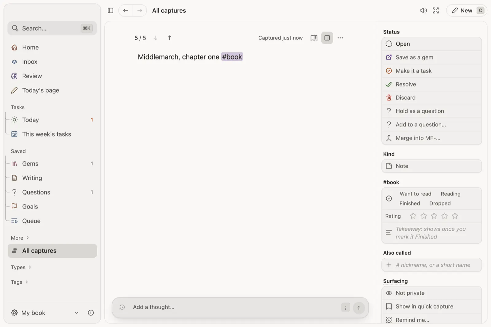

Keep what you read. Write from what you kept.
A commonplace book is where readers copy what struck them and writers go looking for it later. Vigil keeps both halves in one place.

What you would use
- #book notes. Tag a note #book for a reading status, a rating out of five and what you will keep from it.
- A reading queue. Line up what you mean to read and go through it one after another, with Up next under the page.
- From gems to an essay. Pick a few gems with X and choose Start an article, and your own words are where you begin.
- Highlights come in. Readwise and Kindle highlights arrive as notes you can keep and review.
- Your year in books. Your year plays back the books you finished with everything else you caught.